import matplotlib.pyplot as mplt
import numpy as np
import sympy as sym
def polar_to_cartesian(r, theta): # 'def' nos permite 'crear' nuestras propias funciones en Python.
xx = r * sym.cos(theta)
yy = r * sym.sin(theta)
return(xx, yy)
def cartesian_to_polar(x, y):
rr = sym.sqrt(x**2 + y**2)
theta = sym.atan2(y, x)
return(rr, theta)Coordenadas polares
Las coordenadas polares o sistemas polares son un sistema de coordenadas 2-dimensionales en el que cada punto del plano se determina por una distancia y un ángulo, denotados usualmente por \(𝑟\) y \(\theta\) , respectivamente. Las distancias y los ángulos son con respecto a un punto llamado origen y un eje horizontal llamado eje polar.
Cuando se tienen dos sistemas coordenados para un mismo espacio resulta natural el preguntarse si existe una manera de ‘pasar’ de una a otra. Para el caso del plano \(\mathbb{R}^{2}\), es sabido que las fórmulas para obtener las coordenadas cartesianas \((x,y)\) de un punto \((r,\theta)\) en coordenadas polares son: \[\begin{align*} x &= r\cos(\theta), \\ y &= r\sin(\theta). \end{align*}\]
Recíprocamente, las fórmulas para obtener las coordenadas polares \((r,\theta)\) de un punto \((x,y)\) en coordenadas cartesianas son: \[\begin{align*} r &= \sqrt{x^2+y^2}, \\ \theta &= \arctan{\frac{y}{x}}. \end{align*}\]
Veamos algunos ejemplos
# De polares a cartesianas:
print(polar_to_cartesian(1, 0))
print(polar_to_cartesian(1, sym.pi/6))
print(polar_to_cartesian(1, sym.pi/4))
print(polar_to_cartesian(1, sym.pi/3))
print(polar_to_cartesian(1, sym.pi))
print(polar_to_cartesian(1, 3*sym.pi/2))
print(polar_to_cartesian(1, 2*sym.pi))(1, 0)
(sqrt(3)/2, 1/2)
(sqrt(2)/2, sqrt(2)/2)
(1/2, sqrt(3)/2)
(-1, 0)
(0, -1)
(1, 0)# De cartesianas a polares:
print(cartesian_to_polar(1, 0))
print(cartesian_to_polar(1, 1))
print(cartesian_to_polar(0, 1))
print(cartesian_to_polar(-1, 0))
print(cartesian_to_polar(2, -1))(1, 0)
(sqrt(2), pi/4)
(1, pi/2)
(1, pi)
(sqrt(5), -atan(1/2))import matplotlib.pyplot as plt
import numpy as np
# Rango de t
t = np.linspace(0, 2*np.pi, 400)
# Ecuaciones paramétricas
x = np.cos(t)
y = np.sin(t)
# Crear figura
plt.figure(figsize=(6,6))
plt.plot(x, y, color='blue', linewidth=2)
#plt.plot(t, y, color='red', linewidth=2)
plt.show()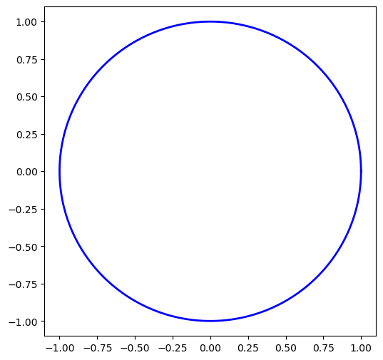
El plano polar
Un Plano Polar es un plano que contiene como referencias ángulos y magnitudes, lo cual nos permite representar un punto en 2-dimensiones conociendo sus coordenadas polares. Este plano consiste de circunferencias concéntricas a un origen y rectas concurrentes a este con distintos ángulos de inclinación.
import matplotlib.pyplot as mplt
import numpy as np
ax = mplt.subplot(111, projection='polar')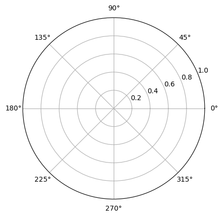
Ecuaciones polares
Se le llama ecuación polar a la ecuación que define una curva expresada en coordenadas polares. En muchos casos se puede especificar tal ecuación definiendo \(r\) como una función de \(\theta\). La curva resultante consiste en una serie de puntos en la forma \(({\displaystyle r}(\theta), \theta)\) y se puede representar como la gráfica de una función \({\displaystyle r}\).
Una de las funciones básicas a tener en cuenta es la función identidad:
\[\theta = r\]
ax = mplt.subplot(111, projection='polar')
theta = np.arange(0, 4*np.pi, 0.01)
r = theta
mplt.polar(r, theta)
mplt.show()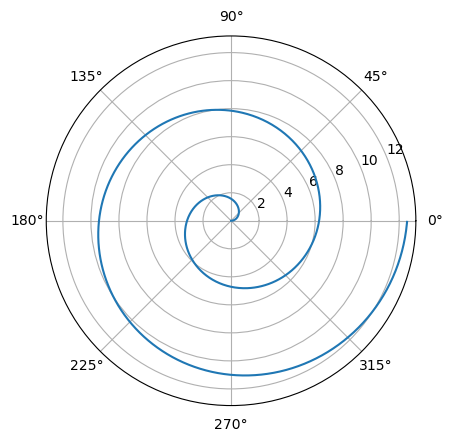
ax = mplt.subplot(111, projection='polar')
r1 = np.arange(0, 12*np.pi, 0.01)
theta1 = r1
mplt.polar(r1, theta1)
mplt.show()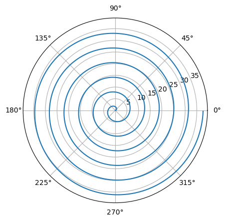
Ahora, una función cuadrática en el radio \(\theta = r^2\). A partir de este ejemplo debemos tomar en cuenta que la variable 𝑟 puede tomar valores negativos:
ax = mplt.subplot(111, projection='polar')
r2 = np.arange(0, 2*np.pi, 0.01)
theta2 = r2**2
mplt.polar(r2, theta2)
mplt.show()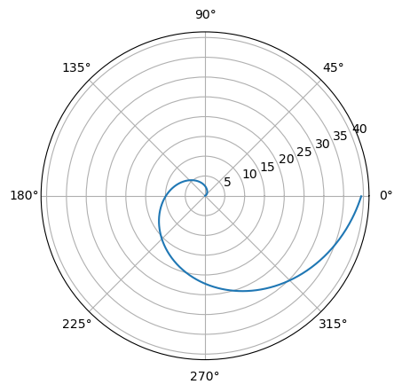
ax = mplt.subplot(111, projection='polar')
r2 = np.arange(-4*np.pi, 4*np.pi, 0.01)
theta2 = r2**2
mplt.polar(r2, theta2)
mplt.show()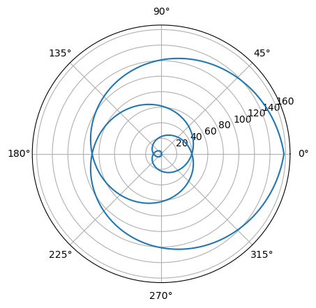
Pendiente
La pendiente de una curva polar \(r = f(\theta)\) está dada por \(\dfrac{dy}{dx}\). Si \(f\) es una función diferenciable de \(\theta\), entonces también lo son x y y, y cuando \(\dfrac{dy}{dx} \ne 0\), podemos calcular \(\dfrac{dy}{dx}\) con la fórmula paramétrica
\[\begin{align} \dfrac{dy}{dx} &= \dfrac{dy/d\theta}{dx/d\theta}\\ & = \dfrac{\dfrac{d}{d\theta}(f(\theta)\cdot \sin\theta)}{\dfrac{d}{d\theta}(f(\theta)\cdot \cos \theta)}=\dfrac{f'(\theta)\sin\theta+f(\theta)\cos\theta}{f'(\theta)\cos\theta-f(\theta)\sin\theta} \end{align}\]
luego
\[\dfrac{dy}{dx}\bigg|_{(r,\theta_0)} = \dfrac{f'(\theta_0)\sin\theta_0 + f(\theta_0)\cos\theta_0}{f'(\theta_0)\cos\theta_0-f(\theta_0)\sin\theta_0}\]
siempre y cuando \(dx/d\theta \ne 0\) en \((r,\theta)\)
Si la curva \(r = f(\theta)\) pasa por el origen cuando \(\theta = \theta_0\), entonces \(f(\theta_0) = 0\), y la ecuación de la pendiente da \[\dfrac{dy}{dx}\bigg|_{(0,\theta_0)} = \dfrac{f'(\theta_0)\sin\theta_0}{f'(\theta_0)\cos\theta_0}=\tan \theta_0\]
Pruebas de simetría para gráficas polares
Simetría con respecto al eje x: si el punto \((r,\theta)\) se encuentra sobre la gráfica, el punto \((r,-\theta)\) o \((-r,\pi-\theta)\) se encuentra sobre la gráfica (figura a).
Simetría con respecto al eje y: si el punto \((r,\theta)\) se encuentra sobre la gráfica, el punto \((r,\pi-\theta)\) o \((-r,-\theta)\) se encuentra sobre la gráfica (figura b).
Simetría con respecto al origen: si el punto \((r,\theta)\) se encuentra sobre la gráfica, el punto \((-r,\theta)\) o \((r,\theta+\pi)\) se encuentra sobre la gráfica. (figura c).
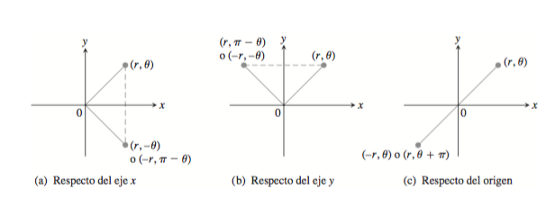
Curvas polares comunes
Círculos y espirales
Los círculos son ecuaciones de la forma \[r=a\] \[r=a\sin\theta\] \[r=a\cos\theta\] con \(a>0\)
las espirales son ecuaciones de la forma \(r=a\theta\)
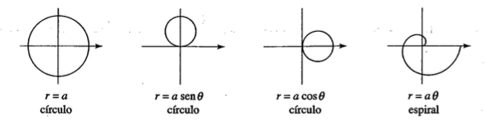
Ejemplo
Graficar la ecuación \(r=1\)
import numpy as np
import matplotlib.pyplot as mplt
theta = np.linspace(0, 2*np.pi, 100)
r = np.linspace(1,1,100)
mplt.polar(theta,r)
mplt.show()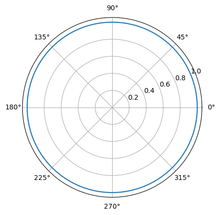
Espiral de Arquimedes
La espiral de arquimedes se define como \(r(\theta)=a+b\theta\)
Ejemplo
graficar una espiral de Arquímedes:
\[r(\theta)= 5 + 2\theta\]
import numpy as np
import matplotlib.pyplot as plt
theta = np.linspace(0, 2*np.pi, 10000)
r = 5 + 2*theta
fig = plt.figure()
ax = fig.add_subplot(111, projection="polar")
ax.plot(theta,r)
plt.show()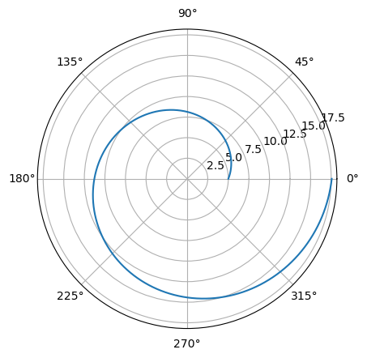
Caracoles
Son ecuaciones de la forma
\[r=a\pm b\sin\theta\] \[r=a\pm b\cos\theta\]
con \(a>0, b>0\) la orientación depende de la función trigonometrica y del signo de \(b\)
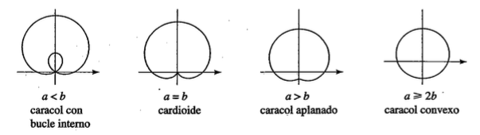
Ejemplo
Grafica de la curva \(r= 3 + 3\sin\theta\)
ax = mplt.subplot(111, projection='polar')
theta = np.arange(0, 5*np.pi/3, 0.01)
r = 1+2*np.cos(theta)
mplt.polar(theta, r)
mplt.show()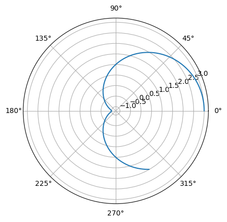
ax = mplt.subplot(111, projection='polar')
theta = np.arange(0, 2*np.pi, 0.01)
r = 2+5*np.sin(theta)
mplt.polar(theta, r)
mplt.show()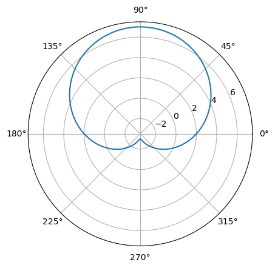
Rosa polar
La gráfica de una rosa es de la forma
\[r= a\cos(n\theta)\] \[r= a\sin(n\theta)\]
La rosa será de \(n\) petalos si \(n\) es impar y de \(2n\) pétalos si \(n\) es par
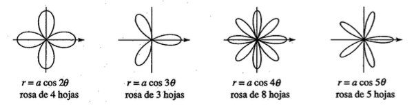
Ejemplo
Graficar la rosa polar
\[r(\theta) = 2\cos(3\theta)\]
theta = np.arange(0, 2*np.pi, 0.01)
r = 2*np.sin(3*theta)
# Create polar plot
plt.figure(figsize=(8, 6))
plt.subplot(polar=True)
plt.plot(theta, r, color='blue') # Use absolute value to complete the rose
plt.title('Polar Equation: r = 3sin(4t)')
plt.grid(True)
# Customize plot
plt.ylim(0, 3) # Set radial limits
plt.show()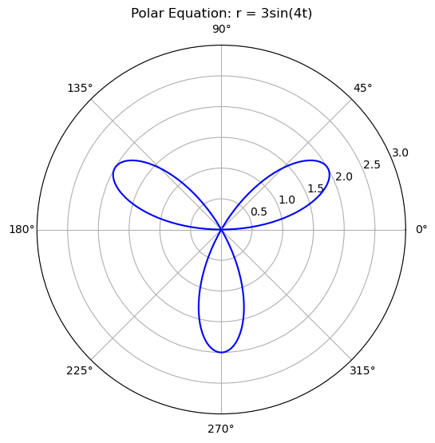
Lemniscata
son curvas de la forma
\[r^2=a^2\sin(2\theta)\] \[r^2=a^2\cos(2\theta)\]
y estas curvas tienen forma de ocho.
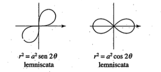
Ejemplo
Graficar de la curva \(r^2=9\sin(2\theta)\)
ax = mplt.subplot(111, projection='polar')
theta = np.arange(0, 2*np.pi, 0.001)
r = 3*np.sqrt(np.cos(2*theta))
mplt.polar(theta, r)
mplt.show()C:\Users\willi\AppData\Local\Temp\ipykernel_13240\943909648.py:4: RuntimeWarning: invalid value encountered in sqrt
r = 3*np.sqrt(np.cos(2*theta))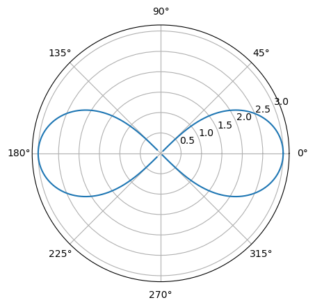
Área de una región delimitada por una curva polar
Supongamos que \(f\) es continua y no negativa en el intervalo \(\alpha \leq \theta \leq \beta\) con \(0<\beta - \alpha \leq 2\pi\).
El área de la región delimitada por el gráfico de \(r=f(\theta)\) entre las líneas radiales \(\theta = \alpha\) y \(\theta=\beta\) es
\[A=\displaystyle \dfrac{1}{2}\int_{\alpha}^{\beta}[f(\theta)]^2 d\theta =\dfrac{1}{2}\int_{\alpha}^{\beta}r^2 d\theta\].
Ejemplo
Hallar el área de un pétalo de la rosa definida por la ecuación \(r=3\sin(2\theta)\).
import numpy as np
import matplotlib.pyplot as plt
# Define parameters
t = np.linspace(0, 2*np.pi, 300) # Angular range from 0 to 2π
r = 3 * np.sin(2*t) # Changed from 2t to 4t to create four petals
# Create polar plot
plt.figure(figsize=(8, 6))
plt.subplot(polar=True)
plt.plot(t, np.abs(r), color='blue') # Use absolute value to complete the rose
plt.title('Polar Equation: r = 3sin(4t)')
plt.grid(True)
# Customize plot
plt.ylim(0, 4) # Set radial limits
plt.show()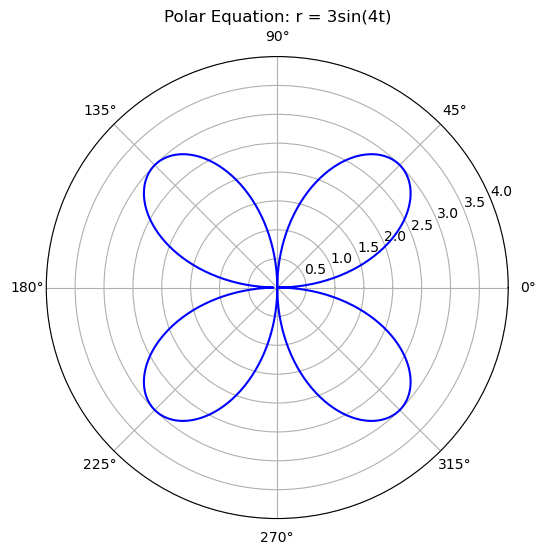
Cuando \(\theta=0\) tenemos \(r=3\sin(2\theta)=0\). El siguiente valor para el que \(r=0\) es \(\theta=\frac{\pi}{2}\). Esto se puede ver resolviendo la ecuación \(3\sin(2\theta)=0\) para \(\theta\). Por lo tanto, los valores \(\theta=0\) a \(\theta=\frac{\pi}{2}\) traza el primer pétalo de la rosa. \[ \begin{align} A &= \displaystyle \dfrac{1}{2}\int_{\alpha}^{\beta}[f(\theta)]^2 d\theta = \dfrac{1}{2} \int_{0}^{\pi/2}[3\sin(2\theta)]^2d\theta \\ &= \dfrac{1}{2} \int_{0}^{\pi/2}9\sin^2(2\theta)dθ = \dfrac{9}{2}\int_0^{\pi/2}\dfrac{(1−cos(4\theta))}{2}d\theta \\ &= \dfrac{9}{4}\int_0^{\pi/2}\left(1−cos(4\theta)\right)d\theta = \dfrac{9}{4}\left(\theta−\dfrac{\sin(4\theta)}{4}\right)\bigg|_0^{\pi/2}\\ &= \dfrac{9}{4}\left(\dfrac{\pi}{2}−\dfrac{\sin(2\pi)}{4}\right)−\dfrac{9}{4}\left(0−\dfrac{\sin 4(0)}{4}\right) \\ &= \dfrac{9\pi}{8} \end{align} \]
Longitud de arco de una curva definida por una función polar
Supongamos que \(f\) es una función cuya derivada es continua en un intervalo \(α≤θ≤β\).
La longitud de arco del gráfico de \(r=f(θ)\) de \(θ=α\) a \(θ=β\) es \[ L=\displaystyle \int_α^\beta \sqrt{[f(θ)]^2+[f'(θ)]^2}dθ =\int_α^\beta \sqrt{r^2+\left(\dfrac{dr}{dθ}\right)^2}dθ. \]
Ejemplo
Halle la longitud de arco de la cardioide \(r=2+2cosθ\).
La longitud de arco en coordenadas polares está dada por la fórmula:
\[L = \int_{\theta_1}^{\theta_2} \sqrt{r^2 + \left(\frac{dr}{d\theta}\right)^2} \, d\theta\]
Dado que: \[r = 2 + 2\cos\theta\]
Derivamos con respecto a \(\theta\):
\[\dfrac{dr}{d\theta} = -2\sin\theta\]
Calculamos el integrando:
\[r^2 = (2 + 2\cos\theta)^2 = 4 + 8\cos\theta + 4\cos^2\theta\]
\[ \left(\frac{dr}{d\theta}\right)^2 = (-2\sin\theta)^2 = 4\sin^2\theta\]
Sumamos: \[ r^2 + \left(\frac{dr}{d\theta}\right)^2 = 8 + 8\cos\theta \]
Factorizamos: \[ 8(1 + \cos\theta) = 16\cos^2\left(\frac{\theta}{2}\right) \]
Tomamos la raíz cuadrada:
\[ \sqrt{16\cos^2\left(\frac{\theta}{2}\right)} = 4\bigg|\cos\left(\frac{\theta}{2}\right)\bigg| \]
Como \(\cos\left(\frac{\theta}{2}\right)\) es positivo en \([0,\pi]\), se obtiene:
\[ L = \int_0^{2\pi} 4\bigg|\cos\left(\frac{\theta}{2}\right)\bigg| \, d\theta \]
\[ L = 2\int_0^{\pi} 4\cos \left(\frac{\theta}{2}\right) \, d\theta \]
Resolviendo la integral:
\[ \begin{align} L &= 8\left(2\sin \frac{\theta}{2} \Big|_0^{\pi}\right)\\ &= 8(2\sin(\pi/2) - \sin 0) = 8(2 - 0) = 16 \end{align} \]
ax = mplt.subplot(111, projection='polar')
theta = np.arange(0, 2*np.pi, 0.01)
r = 2+2*np.cos(theta)
mplt.polar(theta, r)
mplt.show()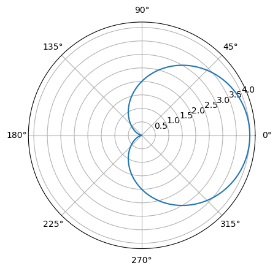
OJO
Calcular la longitud de arco de \(r=3\sin(2\theta)\)